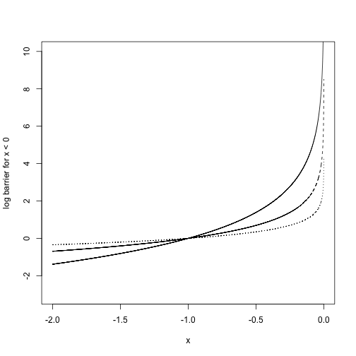

Methods for constrained optimization problems
Agenda for the week
The problem we want to solve
\[
\begin{align*}
\text{minimize}_x \quad &f(x)\\
\text{subject to} \quad &f_1(x) = c
\end{align*}
\]
For example
We roll a 6-sided die \(n\) times. It comes up 1 \(n_1\) times, 2 \(n_2\) times, and so on up to \(n_6\).
We don't necessarily trust it to be fair, and so we want maximum likelihood estimates of the chance of rolling \(1, \ldots, 6\).
We write down the likelihood: \[
L(p_1, \ldots, p_6) = \frac{n!}{\prod_{i=1}^6 n_i!} \prod_{i=1}^6 p_i^{n_i}
\]
And the log likelihood \[
\ell(p_1, \ldots, p_6) = \log \frac{n!}{\prod_{i=1}^6 n_i!} + \sum_{i=1}^6 n_i \log p_i
\]
Optimize by taking the derivative and setting to zero? \[
\frac{\partial \ell}{\partial p_1} = \frac{n_1}{\theta_1} = 0
\]
This is actually a constrained optimization problem, we don't just maximize the likelihood, we maximize subject to the constraint \(\sum_{i=1}^6 p_i = 1\).
Our problem really should be \[
\begin{align*}
\text{maximuze} \quad &\ell(p_1, \ldots, p_6)\\
\text{subject to} \quad &\sum_{i=1}^n p_i= 1
\end{align*}
\]
Lagrange multipliers
Suppose we want to minimize \(f(x)\) subject to the constraint \(f_1(x) = c\) (equivalently, \(f_1(x) - c = 0\)).
We can form the Lagrangian:
\[
\mathcal L(x, \lambda) = f(x) - \lambda (f_1(x) - c)
\]
If we minimize \(\mathcal L\) over \(x\) and \(\lambda\), the optimal value \(x^*\) will be the same as the optimal value for the constrained problem.
Why?
\[
\begin{align*}
\nabla_x \mathcal L |_{x^*, \lambda^*} &= \nabla f(x^*) - \lambda^* \nabla f_1(x^*) = 0 \\
\frac{\partial \mathcal L}{\partial \lambda}|_{x^*, \lambda^*} &= f_1(x^*) - c = 0
\end{align*}
\]
- Second line tells us that \(f_1(x^*) - c = 0\) at the optimal point.
First line tells us that at the optimal point, the gradients of the objective function (\(f\)) and the constraint function (\(f_1\)) will be parallel.
Interpretation: At a point where gradients are not parallel, a tiny step along \(f_1\) in one direction will lead to an increase in the value of \(f\), and a tiny step in the other direction will lead to a decrease in the value of \(f\). Therefore, that point can't be optimal.
Lagrange multipliers for multinomial likelihood
Lagrangian for the constrained maximum likelihood problem:
\[
\mathcal L(p_1, \ldots, p_6, \lambda) = \log \frac{n!}{\prod_{i=1}^6 n_i!} + \sum_{i=1}^6 n_i \log (p_i) - \lambda (\sum_{i=1}^6 p_i - 1)
\]
Derivatives with respect to \(p_i\): \[
\frac{\partial \mathcal L}{\partial p_i}|_{p_i^*, \lambda^*} = \frac{n_i}{p_i^*} - \lambda^* = 0
\] Rearranging tells us that \(\frac{n_i}{ \lambda^*} = p_i^*\)
Derivative with respect to \(\lambda\): \[
\frac{\partial \mathcal L}{\partial \lambda}|_{p_i^*, \lambda^*} = \sum_{i=1}^6 p_i - 1 = 0
\]
A bit more manipulation: \[
\sum_{i=1}^6 \frac{n_i}{\lambda^*} = \sum_{i=1}^6 p_i^* = 1
\] so \(\lambda^* = \sum_{i=1}^6 n_i = n\), and \(p_i^* = \frac{n_i}{\sum_{i=1}^6 n_i}\)
Notes
Useful because it makes equality-constrained problems into unconstrained problems, and we have a lot of ways of solving unconstrained problems
From the material on convex problems, we know that equality constraints are only likely to maintain the convexity of the problem if the equality constraints are linear/affine
But the theory goes through for non-linear equality constraints: if you can solve analytically you will get the right solution, and if you apply some of the descent methods we used for unconstrained problems to a non-convex problem you can still get a result
Can deal with multiple equality constraints by having multiple Lagrange multipliers.
Inequality constraints
Suppose we want to minimize \(f(x)\) subject to the constraint \(f_1(x) \le c\) (equivalently, \(f_1(x) - c \le 0\)).
We could change it to an unconstrained problem by defining the following function: \[
I(x) = \begin{cases}
\infty & f_1(x) - c > 0 \\
0 & f_1(x) - c \le 0
\end{cases}
\]
Then \[
\text{minimize } f(x) \quad \text{subject to } f_1(x) - c \le 0
\] is equivalent to \[
\text{minimize } f(x) + I(x)
\]
Problem: The \(I(x)\) function doesn't play well with the methods we have for unconstrained optimization.
Solution: Make a nice (i.e. differentiable) approximation of \(I(x)\).
The log-barrier function is our differentiable approximation: \[
\hat I_\mu(x) = \begin{cases}
- \mu \log(c - f_1(x)) & f_1(x) - c \le 0\\
\infty & f_1(x) - c > 0
\end{cases}
\]
As \(\mu\) gets closer to 0, \(\hat I_\mu\) is a better approximation to \(I\).
For example: if we want to enforce \(x < 0\) (\(f_1(x) = x, c = 0\)), the log-barrier function would be \(-\mu \log(-x)\)
x = seq(-2,0, length.out = 10000)[-10000]
plot(-2 * log(-x) ~ x, type = 'l', ylim = c(-3, 10), ylab = "log barrier for x < 0", lty = 1)
points(-1 * log(-x) ~ x, type = 'l', lty = 2)
points(-.5 * log(-x) ~ x, type = 'l', lty = 3)

Interior Point algorithm
Problem: \[
\begin{align*}
\text{minimize } &f(x) \\
\text{subject to } & f_i(x) \le c_i, \quad i = 1,\ldots, m
\end{align*}
\]
Start with a point \(x\) in the feasible set, initial \(\mu\)
Repeat
Until the stopping criterion is reached.
Example: dice again
Suppose we think that our dice are biased in a certain way: \(\sum_{i=1}^3 p_i \ge .6\), and we also don't think any given \(p_i\) is too small: \(p_i \ge .01\), \(i = 1,\ldots, 6\).
We can write the maximum likelihood problem subject to this constraint as
\[
\begin{align*}
\text{maximize} \quad & \ell(p_1, \ldots, p_n)\\
\text{subject to} \quad& \sum_{i=1}^6 p_i = 1\\
& \sum_{i=1}^3 p_i \ge .6\\
& p_i \ge .01, \quad i = 1,\ldots, 6
\end{align*}
\]
We can incorporate the equality constraints as Lagrange multipliers: \[
\begin{align*}
\text{maximize} \quad & \mathcal L(p_1, \ldots, p_n, \lambda)\\
\text{subject to} \quad& \sum_{i=1}^3 p_i \ge .6\\
& p_i \ge .01, \quad i = 1,\ldots, 6
\end{align*}
\] and try to use the barrier method to get the maximum likelihood estimate for the inequality-constrained problem.
Define a function for the Lagrangian:
lagrangian = function(p_and_lambda, nvec) {
p = p_and_lambda[1:6]
lambda = p_and_lambda[7]
if(any(p <= 0)){
return(-Inf)
}
L = sum(nvec * log(p)) - lambda * (sum(p) - 1)
return(L)
}
logbarrier = function(p, mu) {
if(sum(p[1:3]) >= .6 && all(p >= .01)) {
return(-mu * log (-.6 + sum(p[1:3])) - mu * sum(log(-.01 + p)))
}
return(Inf)
}
neg_lagrangian_and_logbarrier = function(p_and_lambda, mu, nvec) {
p = p_and_lambda[1:6]
-lagrangian(p_and_lambda = p_and_lambda, nvec = nvec) -logbarrier(p = p, mu = mu)
}
nvec = c(50,10,10,10,10,20)
nvec / sum(nvec)
## [1] 0.45454545 0.09090909 0.09090909 0.09090909 0.09090909 0.18181818
starting_p_and_lambda = c(nvec / sum(nvec),100)
mu = .25
## check that the starting values are valid
logbarrier(starting_p_and_lambda, mu = mu)
## [1] 2.834713
## optimize
o = optim(starting_p_and_lambda,
neg_lagrangian_and_logbarrier,
mu = mu, nvec = nvec, method = "SANN")
round(o$par[1:6], digits = 3)
## [1] 0.455 0.091 0.091 0.091 0.091 0.182
sum(o$par[1:6])
## [1] 1
sum(o$par[1:3])
## [1] 0.6363636
Try again with a different set of data values
nvec = c(35,10,10,10,10,20)
nvec / sum(nvec)
## [1] 0.3684211 0.1052632 0.1052632 0.1052632 0.1052632 0.2105263
current_p_and_lambda = c(.5, .1, .1, .1, .1, .1,100)
mu = 1
alpha = .5
logbarrier(starting_p_and_lambda, mu = mu)
## [1] 11.33885
o = optim(current_p_and_lambda,
neg_lagrangian_and_logbarrier,
mu = mu, nvec = nvec, method = "Nelder-Mead")
cat(round(o$par[1:6], digits = 3), "\n")
## 0.341 0.122 0.137 0.068 0.099 0.148
cat(sum(o$par[1:6]), "\n")
## 0.9146866
cat(sum(o$par[1:3]), "\n")
## 0.6
Summing up
Lagrange multipliers to make equality-constrained problems into unconstrained problems.
Interior point methods solve the inequality-constrained problem by approximating a hard barrier with a soft one.
Idea overall is to change constrained problems into unconstrained ones, and then solve either the unconstrained problem or an approximation.